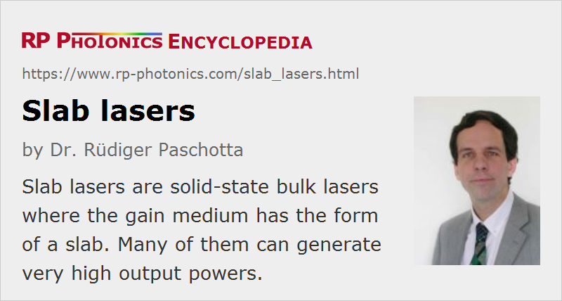

Slab Lasers
Definition: solid-state bulk lasers where the gain medium has the form of a slab
More general term: solid-state lasers
How to cite the article; suggest additional literature
Author: Dr. Rüdiger Paschotta
Slab lasers represent one class of high-power solid-state bulk lasers, where the gain medium (laser crystal) has the form of a slab. Typically, a laser slab is thin in one dimension, compared with the larger extent in the other two directions. However, other lasers without a large aspect ratio of the gain medium are sometimes also called slab lasers, simply because their gain medium has a rectangular rather than a circular cross-section. Such lasers are actually often not very different from rod lasers, also in terms of power scaling (see below).
Slab lasers often use laser crystals with relatively large dimensions, as required for high power operation. The principle can be realized with different laser crystal materials, for example with Nd:YAG, Yb:YAG or alexandrite.
There are also CO2 lasers with a slab geometry, where the carbon dioxide mixture forms a wide gain sheet between two metallic electrodes. The laser light may be extracted, e.g., with a hybrid laser resonator, which is an unstable resonator in the horizontal direction and a waveguide resonator in the vertical direction. The rest of this article considers solid-state slab lasers only.
Face Pumping versus Edge Pumping
If only the typical slab lasers with wide aspect ratio are considered, there are essentially two different pumping geometries, as sketched in Figure 1.
The more traditional face-pumped geometry has been developed for lamp pumping. Here, the pump light comes from the top and bottom, through a transparent cooling liquid (not shown), which is usually in direct contact with the slab. Offering a huge area and at the same time a very large angular range, this geometry has very low demands concerning pump beam quality. However, it requires a relatively large thickness and/or doping concentration in order to achieve a reasonably high pump absorption efficiency. This is a problem at high power levels (see below). It also makes it difficult to use quasi-three-level gain media.
For diode pumping, the edge-pumping or transverse-pumping geometry is more suitable. The higher spatial coherence of high-power laser diodes (e.g. diode bars or diode stacks) makes it possible to inject all pump light through the relatively narrow edge. The pump diodes can be placed directly at the slab edge, without any optics in between. As the large faces do not have to be transparent, a wide range of cooling mechanisms can be used, including conductive cooling via metallic heat sinks with internal water channels, keeping the cooling water (with possible contaminants) away from the optical surfaces. In addition to the practical advantages of cooling and pumping at different positions, this geometry provides a long absorption path along the wide direction and thus allows the use of a very thin slab without compromising the pump absorption efficiency. It is also possible to reduce the doping concentration and to increase the pump intensity, and this makes it much easier to use quasi-three-level gain media. Further improvements of the pump absorption efficiency (and indirectly of pump uniformity) can be obtained with reflecting coatings on the pump sides, having only narrow slits for injecting the pump light.
For edge pumping, there are still two different geometries possible:
- One can pump the slab in directions perpendicular to the laser beam. This gives a full separation of optics for pump and signal light; one does not need dichroic elements. However, a disadvantage is the non-ideal pump intensity distribution (with highest pump intensity at the outer parts of the signal beam, at least in case of a straight beam path rather than a zig-zag path).
- Using dichroic optics, one can have the pump beam path along a straight signal beam path. This allows for a good overlap of pump and signal intensity along the whole device, and only two edges need to be polished and anti-reflection coated.
- Another aspect is that one may either pump the full vertical range of the slab or only a sheet, so that pump and signal beams do not reach the flat surfaces. The latter approach requires a higher pump beam quality, which however is not a problem with high-power laser diodes as available today. Advantages are that a higher signal beam quality is possible that way, and that the flat sides do not need to be polished.
The so-called Innoslab amplifier design, which offers impressive performance in terms of output power, beam quality and efficiency, is based on edge pumping in the longitudinal direction and the above-mentioned sheet pumping, combined with a zig-zag path as shown below in Fig. 3.
Power Extraction
Power extraction is generally more difficult in slab lasers than in rod lasers and thin-disk lasers, as there is a pronounced asymmetry in terms of both geometry and thermal lensing. This is particularly the case if the full slab volume is pumped (e.g. for lamp-pumped slabs). Assuming that the slab is cooled through its large faces, there is a strong thermal lens in the direction perpendicular to these faces, and a much weaker thermal lens in the other direction. One approach to deal with that is to build a laser resonator with a strongly elliptical mode, adapted to the asymmetric geometric shape and lensing.
A technique for strongly reducing the strong thermal lensing in one direction is to use a zig-zag slab geometry, where the laser beam makes a zig-zag path through the gain medium (Figure 2), so that the effects of the strong thermal lens in the “thin” direction are largely averaged out. Here, the flat surfaces need to be polished for high optical quality, and one must avoid anything (e.g., direct contact with metal surfaces) which could spoil their reflectivity.
Instead of using a strongly elliptical beam, it is possible to fold the beam path in the other direction (Figure 3). Note that the two folding mirrors should not be parallel, as this would induce parasitic lasing between these mirrors. In the vertical direction, the pump radiation may be restricted to a thin slice, and the resonator mode size can be adapted accordingly.
Another approach for power extraction is the use of an unstable laser resonator. Typically, lasing occurs between two highly reflecting mirrors, and part of the circulating power is coupled out using a scraping mirror.
In most cases, a slab laser will have some regions in the laser crystal where the power can not be extracted. This issue reduces the power efficiency of the device, and at the same time it makes it more difficult to obtain diffraction-limited beam quality, because the outer regions of a laser mode experience a higher gain than the central regions, where saturation effects are stronger.
Due to the high gain in the transverse direction, amplified spontaneous emission (ASE) and parasitic lasing can be difficult to suppress in high-power slab lasers, particularly those operating with high gain e.g. for pulse amplification or for pulse generation with Q switching.
Thermal Effects and Power Scaling
Slab lasers represent a laser architecture for use at high power levels, and thus involve strong thermal effects in the gain medium. The temperature profile can be relatively flat in the two long dimensions, but a strong temperature gradient exists in the vertical direction (see the figures above) because the heat is extracted from the top and bottom faces. The zig-zag geometry (see above) causes the effects of this strong gradient to be largely averaged out, but optical distortions arise from residual effects in all directions, particularly from end effects.
The temperature gradient is also associated with thermally induced mechanical stress, which is typically strongest at the left and right sides and may cause fracture of the crystal. For a high fracture limit in terms of pump or output power, the slab needs to be made as thin as possible while the width and length are increased. For a face-pumped geometry (see above), this requirement eventually compromises the pump absorption efficiency. Edge-pumped slabs are much better in this respect. It is expected that power scaling of edge-pumped Yb:YAG slab lasers is possible up to the level of hundreds of kilowatts [11].
Slab Waveguide Lasers
A special kind of slab laser is the slab waveguide laser [13]. Here, the laser light does not fill the whole slab volume, but propagates only within a thin doped region, surrounded by undoped (transparent) material. This doped region also serves as a waveguide in the vertical direction, whereas there is normally no guidance in the other direction. Such a structure is thus a planar waveguide rather than a channel waveguide. Pumping is still possible from the top and bottom, e.g. by injecting pump light from high-power laser diodes through narrow slits in an otherwise reflecting pump chamber. This technology has some sophisticated technical aspects, but may be suitable at least for hundreds of watts of output power with relatively high beam quality.
Competing Architectures
The various kinds of slab lasers compete with other laser architectures which are also capable of generating very high power levels. In particular, thin-disk lasers and fiber lasers can also reach the kilowatt power level while typically offering better beam quality and power efficiency. These architectures are of course not suitable for lamp pumping, and they place certain restrictions on the gain media. Rod lasers compete with slab lasers up to the range of several hundred watts, possibly even a few kilowatts, but probably do not have the potential to reach the region of tens or hundreds of kilowatts.
Suppliers
The RP Photonics Buyer's Guide contains 1 supplier for slab lasers.
Questions and Comments from Users
Here you can submit questions and comments. As far as they get accepted by the author, they will appear above this paragraph together with the author’s answer. The author will decide on acceptance based on certain criteria. Essentially, the issue must be of sufficiently broad interest.
Please do not enter personal data here; we would otherwise delete it soon. (See also our privacy declaration.) If you wish to receive personal feedback or consultancy from the author, please contact him e.g. via e-mail.
By submitting the information, you give your consent to the potential publication of your inputs on our website according to our rules. (If you later retract your consent, we will delete those inputs.) As your inputs are first reviewed by the author, they may be published with some delay.
Bibliography
| [1] | T. J. Kane et al., “Reduced thermal focussing and birefringence in zig-zag slab geometry crystalline lasers”, IEEE J. Quantum Electron. 19 (9), 1351 (1983), doi:10.1109/JQE.1983.1072061 |
| [2] | J. M. Eggleston et al., “The slab geometry laser – part I: theory”, IEEE J. Quantum Electron. 20 (3), 289 (1984), doi:10.1109/JQE.1984.1072386 |
| [3] | T. J. Kane et al., “The slab geometry laser – part II: thermal effects in a finite slab”, IEEE J. Quantum Electron. 21 (8), 1195 (1985), doi:10.1109/JQE.1985.1072799 |
| [4] | G. F. Albrecht et al., “Design and characterization of a high average power slab YAG laser”, IEEE J. Quantum Electron. 22 (11), 2099 (1986), doi:10.1109/JQE.1986.1072922 |
| [5] | D. C. Brown et al., “Parasitic oscillations and amplified spontaneous emission in face-pumped total internal reflection lasers”, Proc. SPIE 736, 74 (1987), doi:10.1117/12.938069 |
| [6] | B. J. Comaskey et al., “One-kilowatt average-power diode-pumped Nd:YAG folded zigzag slab laser”, Proc. SPIE 1865, 9 (1993), doi:10.1117/12.146945 |
| [7] | R. J. Shine et al., “40-W cw, TEM00-mode, diode-laser-pumped, Nd:YAG miniature-slab laser”, Opt. Lett. 20 (5), 459 (1995), doi:10.1364/OL.20.000459 |
| [8] | R. J. St. Pierre et al., “Diode array pumped kilowatt laser”, Proc. SPIE 3264, 2 (1998), doi:10.1117/12.311900 |
| [9] | D. C. Brown, “Nonlinear thermal and stress effects and scaling behavior of YAG slab amplifiers”, IEEE J. Quantum Electron. 34 (12), 2393 (1998), doi:10.1109/3.736114 |
| [10] | K. Du et al., “Partially end-pumped Nd:YAG slab laser with a hybrid resonator”, Opt. Lett. 23 (5), 370 (1998), doi:10.1364/OL.23.000370 |
| [11] | T. S. Rutherford et al., “Edge-pumped quasi-three-level slab lasers: design and power scaling”, IEEE J. Quantum Electron. 36 (2), 205 (2000), doi:10.1109/3.823467 |
| [12] | T. S. Rutherford et al., “Yb:YAG and Nd:YAG edge-pumped slab lasers”, Opt. Lett. 26 (13), 986 (2001), doi:10.1364/OL.26.000986 |
| [13] | J. R. Lee et al., “High average power Nd:YAG planar waveguide laser, face-pumped by 10 laser diode bars”, Opt. Lett. 27 (7), 524 (2002), doi:10.1364/OL.27.000524 |
| [14] | K. Du et al., “Electro-optically Q-switched Nd:YVO4 slab laser with a high repetition rate and a short pulse width”, Opt. Lett. 28 (2), 87 (2003), doi:10.1364/OL.28.000087 |
| [15] | J. I. Mackenzie, “Dielectric solid-state planar waveguide lasers: a review”, J. Sel. Top. Quantum Electron. 13 (3), 626 (2007), doi:10.1109/JSTQE.2007.897184 |
| [16] | Z. Ma et al., “Monolithic Nd:YVO4 slab oscillator–amplifier”, Opt. Lett. 32 (10), 1262 (2007), doi:10.1364/OL.32.001262 |
| [17] | P. Zhu et al., “Diode end-pumped high-power Q-switched double Nd:YAG slab laser and its efficient near-field second-harmonic generation”, Opt. Lett. 33 (19), 2248 (2008), doi:10.1364/OL.33.002248 |
| [18] | P. Russbueldt et al., “Compact diode-pumped 1.1 kW Yb:YAG Innoslab femtosecond amplifiers”, Opt. Lett. 35 (24), 4169 (2010), doi:10.1364/OL.35.004169 |
| [19] | Y. Guo et al., “24.6 kW near diffraction limit quasi-continuous-wave Nd:YAG slab laser based on a stable-unstable hybrid cavity”, Opt. Lett. 45 (5), 1136 (2020), doi:10.1364/OL.385387 |
| [20] | W. Koechner, Solid-State Laser Engineering, 6th edn., Springer, Berlin (2006) |
See also: high-power lasers, solid-state lasers, bulk lasers, rod lasers, thin-disk lasers, fiber lasers, diode-pumped lasers, lamp-pumped lasers
and other articles in the category lasers
|  |
If you like this page, please share the link with your friends and colleagues, e.g. via social media:
These sharing buttons are implemented in a privacy-friendly way!